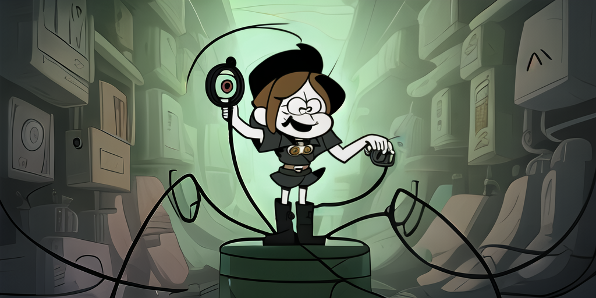

Wiretap

Carapace can tap into other completion sources and bridge them.
Command
Commands using the combined or detached approach can simply be invoked.
Shell
Shells are a bit trickier and may require nasty scripting.
Embed
Carapace invokes itself for continuous embedding.
Explicit
Bridges can be registered using Specs. There is also a config alternative for convenience.
Implicit
Other completion sources can be configured for an implicit fallback.